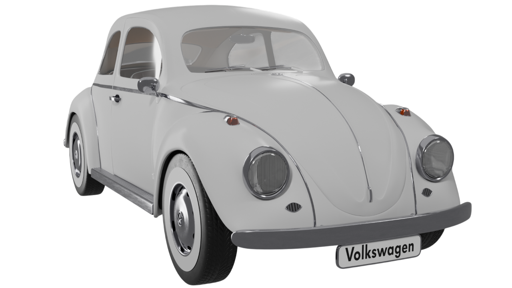
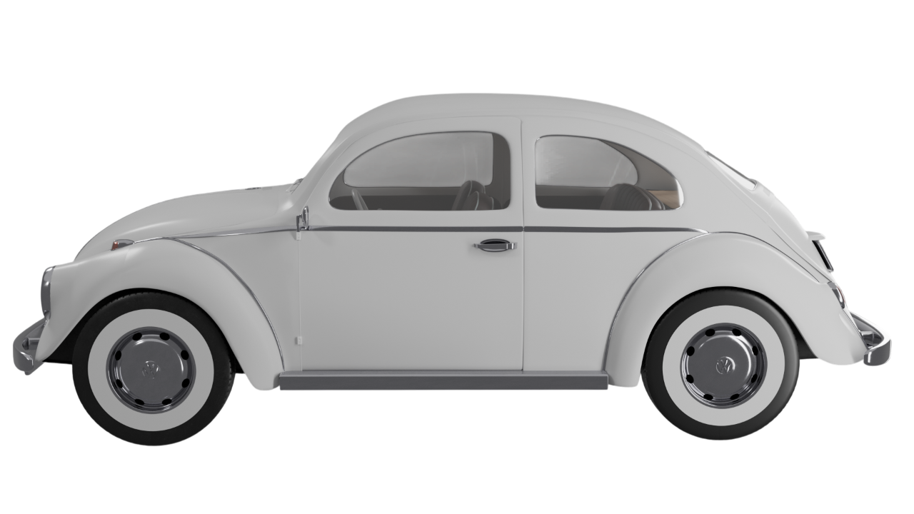
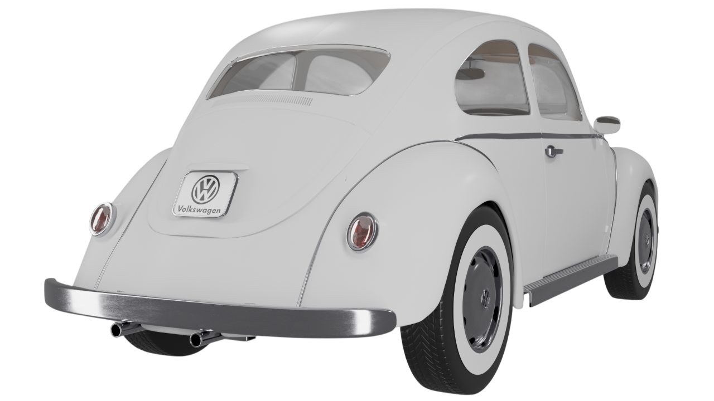
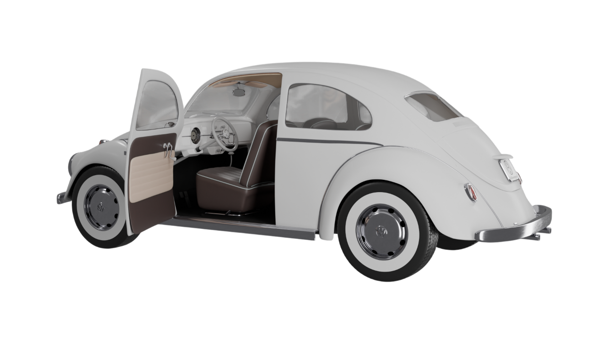
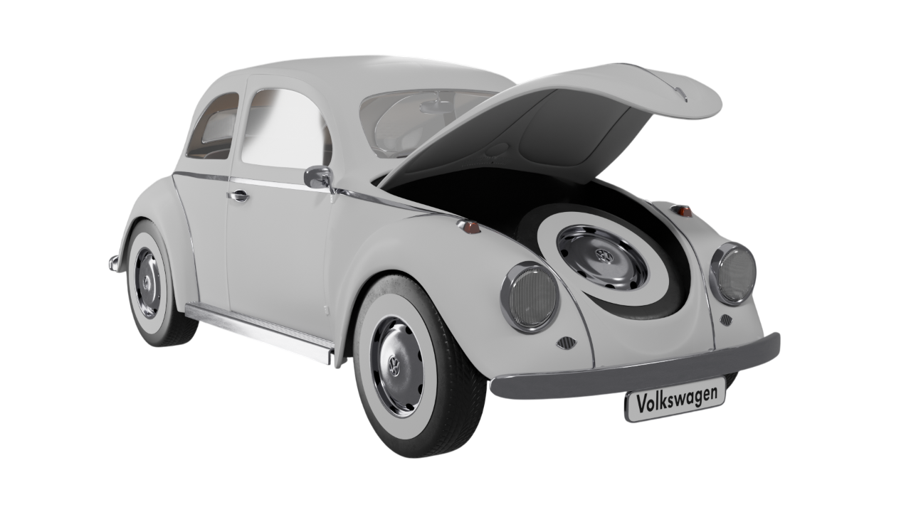
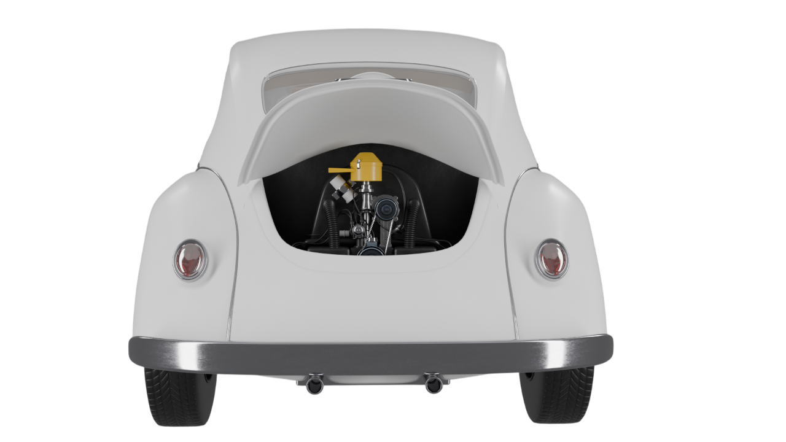

1968 Volkswagen Beetle — The Iconic People's Car
Model History
1968 was the year the name "Beetle" was given to the car. Volkswagen referred to the car as the "Type 1" until
the 1968 model year. In Europe, it was marketed as the VW 1200/1300/1500 before adopting the "Beetle" name given
to it by the public. German brochures used the name "Der Käfer" which means "The Beetle", on the front cover and
inside for the first time in that year.
Originally favored by students and other economy conscious consumers, the "Bug" quickly garnered attention for
its price, fuel economy, durability and quality of manufacturing. VW advertising even demonstrated the water
integrity of the little bug in the event you tried to drive it back to Germany. From 1968 to 2005, a pearl white
1963 fabric sunroof Beetle with racing number "53" and red, white, and blue stripes named "Herbie" played a
starring role in “The Love Bug” series of Disney comedy films.
The popularity of these vehicles led to their place in history as the most produced car ever. The original
Volkswagen ceased production when the Mexico plant stopped its production in the 1900's. Its reputation lives on
in the new VW "Bugs". This 1968 2 door sedan has a streamlined body and a rear-mounted 4-cylinder, 53 hp,
horizontally opposed air-cooled engine and had a factory price of $600.

The 1968 Volkswagen Beetle retained the classic shape that had already become an icon of the global automobile
industry. Its rounded body with protruding fenders and separate round headlights was recognizable literally
anywhere in the world. In 1968, the lights were slightly modernized, became more resistant to moisture, and the
bumpers acquired slots that better dissipated the impact energy in small collisions.
- [Here will be a photo of the front.]
From the side, the Beetle looked even more handsome - its silhouette was smooth and harmonious. The high roof
provided enough headroom even for tall passengers, and the short overhangs made the car very maneuverable in
urban areas. Narrow roof pillars and large windows gave excellent visibility. Chrome moldings on the sides gave
the car a sophisticated look.
- [Here is a side view.]


The rear of the Beetle is one of its most distinctive areas. It was where the engine was mounted, which made
the rear end a little wider and heavier, contributing to good traction. The engine compartment lid opened
downward, and behind it was the famous air-cooled four-cylinder opposition engine. On the hood lid there was a
small ventilation grille and the VW badge.
- [Here's a photo of the rear.]
When opening the doors, the interior was greeted by minimalism, typical for the German design school of that
time. The interior was simple, but well assembled: the metal dashboard was painted in the body color, there was
a minimum of devices - only the most necessary. Comfortable steering wheel with a thin rim, large window
lifters, seats with soft cushion and fabric upholstery made the trip quite comfortable.
- [Here will be a photo with the doors open.]


The front trunk of the Beetle was located under the hood. Despite its compact size, it was thought out to the
last detail: a niche for a spare tire, a compartment for tools and luggage mounts. Thanks to the absence of a
radiator (the engine is air-cooled), the space was used as efficiently as possible.
- [Here is a photo with the front trunk open.]
The engine of the 1968 model had a capacity of 1.5 liters and developed about 53 hp. It was reliable, easy to
repair and very economical. Air cooling eliminated the need to keep an eye on antifreeze, and the sound of the
engine became a real trademark of “Beetle” - it was easily recognizable by ear. The car started well in cold,
had a reliable 4-speed “mechanics” and unpretentious drove on any roads.
- [Here will be a photo of the engine]
